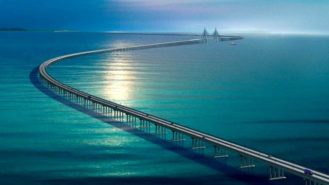
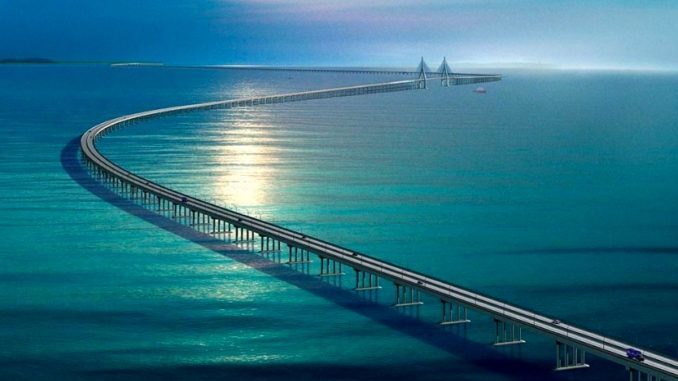

Міст протоки Ханьгжоу
Міст між провінціями Шанхаю і Нінгбо відкрився в 2007-му році і став другим за довжиною - трохи більше 36 км, а на його будівництво було витрачено 1, 4 млрд. доларів.

Міст між провінціями Шанхаю і Нінгбо відкрився в 2007-му році і став другим за довжиною - трохи більше 36 км, а на його будівництво було витрачено 1, 4 млрд. доларів.
